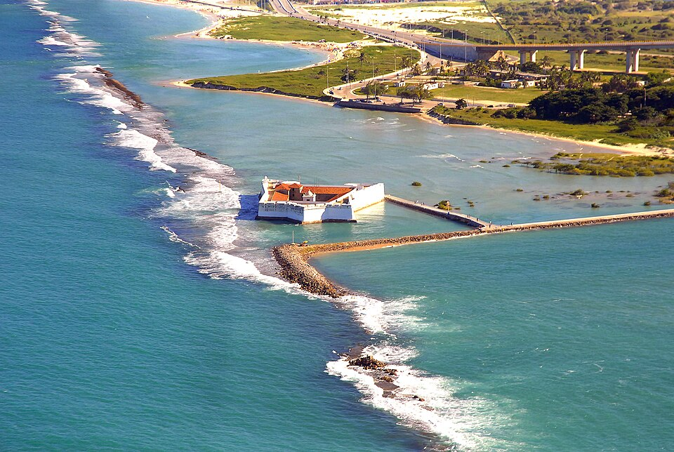
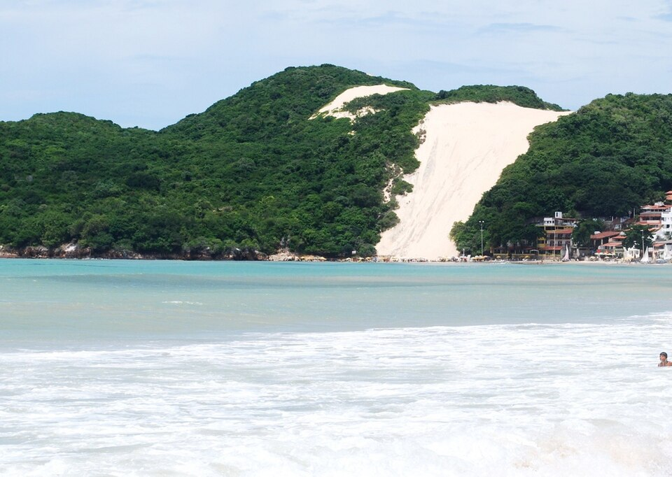
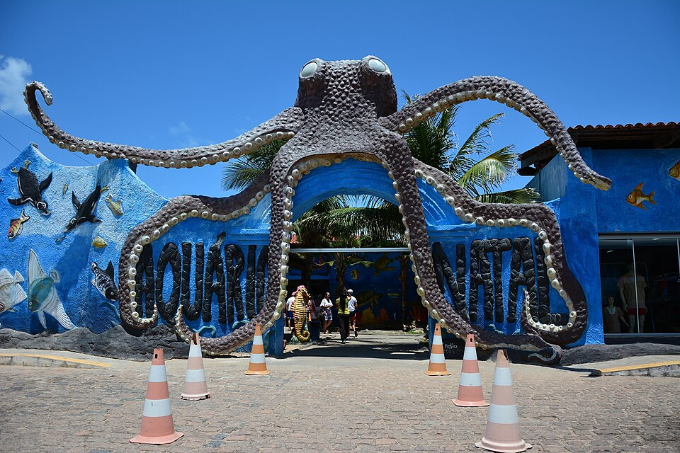
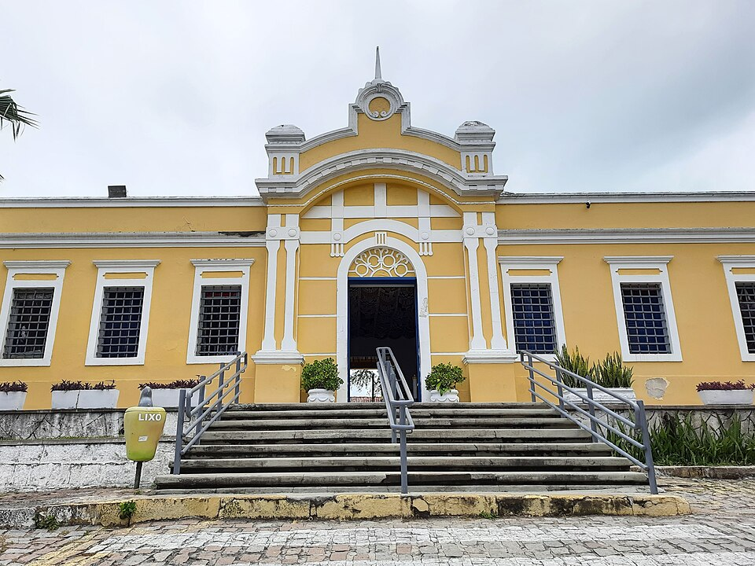
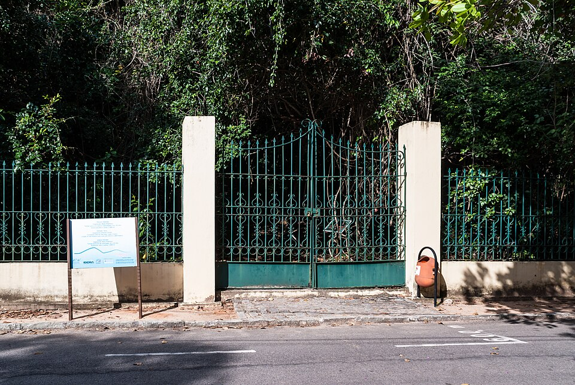
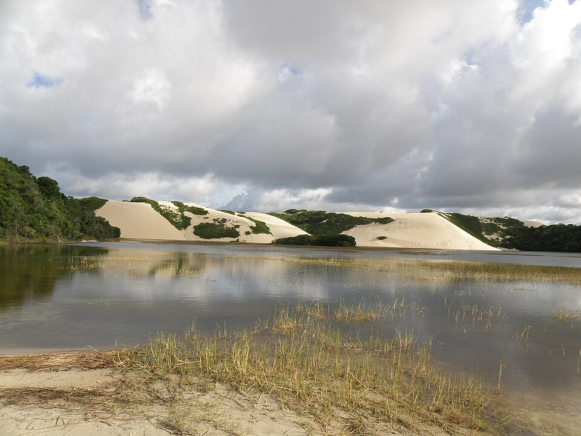

Os principais pontos turísticos de Natal, no Rio Grande do Norte, reúnem
praias paradisíacas, dunas históricas e marcos culturais importantes que
podem ser explorados nesse meu guia:
Forte Dos Reis Magos

O Forte dos Reis Magos é uma edificação militar histórica localizada
na cidade de Natal, no estado brasileiro do Rio Grande do Norte. É
administrada pela Fundação José Augusto, fundação do Governo do Rio
Grande do Norte.O forte foi o marco inicial da cidade — fundado em
25 de dezembro de 1599 —, no lado direito da barra do rio Potengi
(hoje próximo à Ponte Newton Navarro). Recebeu esse nome em função
da data de início da sua construção, 6 de janeiro de 1598, dia de
Reis pelo calendário católico.
Morro Do Careca

O Morro do Careca é uma duna de aproximadamente 107 metros
localizada no extremo sul da Praia de Ponta Negra, em Natal, Rio
Grande do Norte. É um dos principais símbolos turísticos da cidade.
Desde 1997 o Morro do Careca está fechado à visitação, no intuito de
preservar a mata de restinga e até o próprio morro, pois os
delizamentos de areia estavam reduzindo sua altura.
Aquário Natal

O Aquário Natal é um aquário privado localizado no município de
Extremoz, no estado brasileiro do Rio Grande do Norte. O aquário tem
cerca de 200 animais de 60 espécies de animais, como tubarão,
moreias, peixes de corais, cavalos marinhos, além de pinguins,
jacarés, pirarucu, entre outros. Foi inaugurado no ano de 1999 e
também serve de apoio para o Projeto Tamar.
Centro de Turismo

O Centro de Turismo de Natal é um centro cultural e de artesanato
localizado em Natal, no estado brasileiro do Rio Grande do Norte. O
complexo está instalado no bairro Praia do Meio, fazendo parte do
Centro Histórico de Natal, e pertence ao governo do Rio Grande do
Norte, estando cedido a uma cooperativa de artesanato local.
Parque Das Dunas

O Parque Estadual Dunas do Natal Jornalista Luiz Maria Alves, mais
conhecido simplesmente como Parque das Dunas ou Bosque dos
Namorados, é uma reserva de 1.172 hectares de Mata Atlântica situada
no coração da cidade de Natal, capital do estado brasileiro do Rio
Grande do Norte. É administrado pelo Instituto de Desenvolvimento
Econômico e Meio Ambiente (IDEMA).
Dunas de Genipabu

O Parque Turístico Ecológico Dunas de Genipabu (ou Jenipabu engloba
uma praia, um grande complexo de dunas, uma lagoa e uma área de
proteção ambiental localizados no município de Extremoz, no estado
do Rio Grande do Norte, no Brasil. Localiza-se a vinte quilômetros
do Centro da capital do estado, Natal. É um dos mais famosos
cartões-postais do estado.